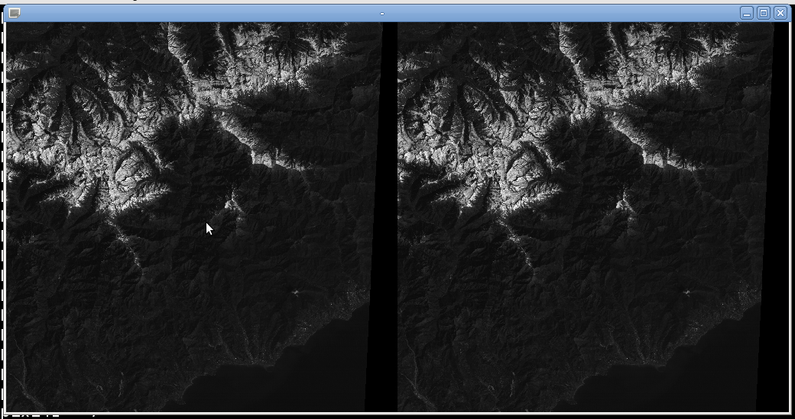

Diane Delallée - M1 Informatique
TD2 : statistiques des images
1.Pixels image et pixels de background
Afin de compter le nombre de pixels ayant la valeur 0 dans une image, on va ajouter un morceau de code dans le programme skelet.c qui permet de parcourir l'image pixel par pixel et compter le nombre de pixel dont la valeur est à 0.
Afin de calculer la proportion, on va également dans ce morceau de code compter le nombre total de pixels.
On trouve alors que pour girl.r il n'y a aucun pixel ayant pour valeur 0. La proportion est donc de 0%.
 Concernant sans-remo.1, on trouve qu'il y a 15913 pixels ayant pour valeur 0. Cela nous fait donc une proportion de 6,07% (15913/262144*100).
Concernant sans-remo.1, on trouve qu'il y a 15913 pixels ayant pour valeur 0. Cela nous fait donc une proportion de 6,07% (15913/262144*100).

2.Histogramme
a.Calculer et afficher l’histogramme de chaque canal de l’image
Afin de calculer l'histogramme de l'image, on va créer un tableau de taille 256 correspondant aux valeurs possibles des pixels. On va ensuite parcourir tous les pixels de l'image et on incrémentera de 1 la valeur du tableau correspondant à la valeur du pixel.
Une fois cela fait, on affichera un nombre d'étoiles proportionnel au nombre de pixels de valeur i.
b.Afficher « l’image histogramme »
Dans cette partie, on a utilisé Gimp afin de transformer, pivoter et redimensionner les histogrammes que l'on a obtenus avec le programme skelet.c.
c.Capturer « l’image histogramme »
On va donc présenter ici tous les histogrammes obtenus pour chaque canal :
Commençons avec les images de Léna.
girl.1 :
girl.2 :
girl.3 :
Léna :
san-remo.1 :
san-remo.2 : 
san-remo.3 :
san-remo :
New-York :
3.Moyenne et écart-type
a.Formulation mathématique
Commençons tout d'abord par rappeler les formules de la moyenne et de l'écart-type :
Dans notre exemple, on sait que H(r) = 0,255. On obtient donc les formules suivantes :
Il ne reste plus qu'à déterminer les dimensions de l'image afin de connaitre M et N. En les remplaçant dans les équations on pourra ainsi déterminer la valeur de la moyenne et de l'écart-type.
b.Programmation et calcul de la moyenne et de l’écart-type
Afin de ne pas tenir compte des pixels de background, il suffit de ne pas prendre en compte tous les pixels dont la valeur est égale à 0.
Le tableau ci-dessous représente les statistiques (moyenne et écart-type) des différents canaux d'images :
4.Conclusion
Rappelons quelques principe permettant de décrypter une image à partir de son histogramme.
Tout d'abord, l'écart-type nous permet de mesurer le contraste d'une photo. Plus l'écart-type sera fort et plus l'image sera contrastée.
Concernant l'histogramme lui même, si celui-ci est décalé sur la droite, alors l'image sera claire, à contrario, si celui-ci est décalé sur la gauche, allors l'image sera sombre. On notera également que plus un histogramme est étalé et plus les couleurs seront dispersées, plus l'image sera riche et l'entropie forte.
A l'inverse, lorsque l'écart-type est faible, on constate que l'histogramme est resseré.
En ce qui concerne l'image de Léna (girl.{3,2,1}), on constate que l'histogramme est très étalé puisque seuls quelques pixels aux extrêmités sont très faiblements représentés. Cette image est donc très riche au niveau des couleurs. Si l'on regarde maintenant son contraste, on constate que l'histogramme est assez bien réparti, l'image possède donc des contrastes importants. On constate que le graphique ne touche ni le côté gauche, ni le côté droit, l'exposition est donc correcte.
Interressons nous à présent à l'image de San-Remo. En regardant son histogramme, on constate qu'il n'est pas très étalé, en effet les pixels se situent majoritairement dans le tiers gauche de l'histogramme. On a donc ici une image ou il y a peu de couleurs différentes (on note principalement du noir et un bleu-violet) et qui est assez sombre. Cette image est donc sous-exposée.
Enfin pour l'image de New-York, on constate que l'histogramme est principalement décalé sur la gauche, ce qui nous permet de dire que l'image doit être sombre. De plus, celui-ci n'est pas très étalé puisque la moitié droite n'est presque pas représentée. Cette image, comme la précédente, ne possède donc pas un vaste panel de couleurs.